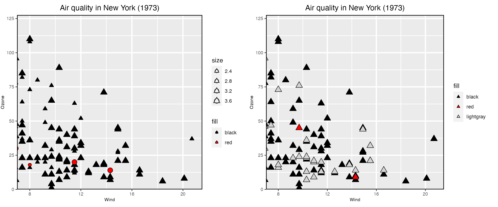

airquality
To provide a working example, consider the airquality dataset with a few additions/changes.
data("airquality")
airquality$Date <- with(airquality,
as.Date(paste("1973", Month, Day, sep = "-")))
airquality$Weekday <- factor(weekdays(airquality$Date),
levels = c("Monday", "Tuesday", "Wednesday",
"Thursday", "Friday",
"Saturday", "Sunday"))
airquality$Month <- factor(month.abb[airquality$Month],
levels = month.abb[unique(airquality$Month)])loon.ggplot() and linkingKey
First, the base l_ggplot structure
lgp <- l_ggplot(airquality,
mapping = aes(x = Wind, y = Ozone)) +
ggtitle("Air quality in New York (1973)") +
geom_point(size = 3) And turn this into an interactive loon plot.
lp <- loon.ggplot(lgp)
# Change glyph aesthetics of ALL points
lp["color"] <- "lightgrey"
lp["glyph"] <- "ctriangle" # closed triangle
lp["size"] <- 25 # proportional to area in loon
# And plot scale and location
lp["zoomX"] <- 1.2
lp["zoomY"] <- 1.2
lp["panX"] <- 7
lp["panY"] <- 0Convert the loon plot to a pure ggplot()
gp <- loon.ggplot(lp) # loon to ggplot
new_lp <- loon.ggplot(gp)Now introduce linking:
# Both the name of the linking group and how to *initially*
# synchronize whether the linked states are to be pushed or pulled.
# The `sync` argument can be missing for the first plot but not the second
# Usually just "pull" state values from the other plots already in the group
l_configure(lp, linkingGroup = "airquality", sync = "pull")
# The sync argument must be specified from now when joining the group.
l_configure(new_lp, linkingGroup = "airquality", sync = "pull")
# and change the colours only in the second plot.
#
new_lp["color"] <- "black"
n <- new_lp["n"]
new_lp["color"][n:(n-3)] <- "red"
new_lp["glyph"][n:(n-3)] <- "ccircle"To show the output, we use loon.ggplot() on both to have them appear as ggplots with a legend for each. (The gridExtra package is used to display the two plots in a single row.)
library(gridExtra)
grid.arrange(loon.ggplot(new_lp), loon.ggplot(lp), nrow = 1)
On the left is new_lp, on the right is lp. Note that each has a different legend showing different features of the display. At left, new_lp has all "skyblue" triangle glyphs but different sizes; at right all the glyphs are the same size but have different colours. But they should be the same plot!
Here’s what happened.
when lp was created, there were several missing observations.
Normally a linkingKey (if not supplied) is constructed from indices 0 to n-1.
Whatever the linkingKey, elements corresponding to missing data are deleted.
The linkingKey for lp is
lp["linkingKey"]
#> [1] "0" "1" "2" "3" "5" "6" "7" "8" "10" "11" "12" "13"
#> [13] "14" "15" "16" "17" "18" "19" "20" "21" "22" "23" "27" "28"
#> [25] "29" "30" "37" "39" "40" "43" "46" "47" "48" "49" "50" "61"
#> [37] "62" "63" "65" "66" "67" "68" "69" "70" "72" "73" "75" "76"
#> [49] "77" "78" "79" "80" "81" "84" "85" "86" "87" "88" "89" "90"
#> [61] "91" "92" "93" "94" "95" "96" "97" "98" "99" "100" "103" "104"
#> [73] "105" "107" "108" "109" "110" "111" "112" "113" "115" "116" "117" "119"
#> [85] "120" "121" "122" "123" "124" "125" "126" "127" "128" "129" "130" "131"
#> [97] "132" "133" "134" "135" "136" "137" "138" "139" "140" "141" "142" "143"
#> [109] "144" "145" "146" "147" "148" "150" "151" "152"which is missing several entries (e.g., no "4").
The linkingKey for new_lp is
new_lp["linkingKey"]
#> [1] "0" "1" "2" "3" "4" "5" "6" "7" "8" "9" "10" "11"
#> [13] "12" "13" "14" "15" "16" "17" "18" "19" "20" "21" "22" "23"
#> [25] "24" "25" "26" "27" "28" "29" "30" "31" "32" "33" "34" "35"
#> [37] "36" "37" "38" "39" "40" "41" "42" "43" "44" "45" "46" "47"
#> [49] "48" "49" "50" "51" "52" "53" "54" "55" "56" "57" "58" "59"
#> [61] "60" "61" "62" "63" "64" "65" "66" "67" "68" "69" "70" "71"
#> [73] "72" "73" "74" "75" "76" "77" "78" "79" "80" "81" "82" "83"
#> [85] "84" "85" "86" "87" "88" "89" "90" "91" "92" "93" "94" "95"
#> [97] "96" "97" "98" "99" "100" "101" "102" "103" "104" "105" "106" "107"
#> [109] "108" "109" "110" "111" "112" "113" "114" "115"which is missing several entries (e.g., no "4"). means that the linkingKey for lp would have deleted indices corresponding to the missing data.
when gp was created, no linkingKey information is saved (being a ggplot) and all sense of missing
Now changes to certain display states in any one plot will be pushed to all plots in the same linking group.